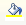
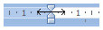

Тест №5. Добавление таблиц
Выберите
один
правильный ответ. После ответа на все вопросы нажмите кнопку «Готово».
Какой из следующих способов создания таблицы наиболее эффективный (быстрый):
Вставка
®
Таблица
®
Вставить таблицу...
Вставка
®
Таблица
®
Нарисовать таблицу
Какие вкладки ленты предназначены для работы с таблицами:
Вид и надстройки
Конструктор и макет
Конструктор и формат
Формат и макет
Какую кнопку необходимо нажать, чтобы начать рисовать таблицу:
Как правильно выделить всю таблицу:
Щёлкнуть по кнопке
Дважды щелкнуть по таблице
Установить курсор внутрь таблицы; Главная
®
Выделить
®
Выделить все
Установить курсор внутрь таблицы и нажать Ctrl + A
В каком месте ячейки нужно щелкнуть, чтобы ее выделить:
Как сделать выделенную таблицу невидимой:
Конструктор
®

Конструктор
®
Границы
®
Конструктор
®
Конструктор
®
Границы
®
Как удалить выделенную таблицу:
Клавишей Delete
Главная
®
Выделить
®
Выделить все
®
Клавиша Delete
Щелкнуть правой кнопкой по таблице
®
Удалить
Макет
®
Удалить
®
Удалить таблицу
Как изменить ширину столбца так, чтобы не изменилась ширина таблицы:

Как объединить выделенные ячейки:
, стереть границы между ячейками
Макет
®
Объединить таблицу
На ленте Конструктор выбрать тип линии "Без границы"
®
®
провести по границам между ячейками
Макет
®
Разбить ячейки заново
Как наиболее проще всего добавить последнюю строку в таблицу:
Макет
®
Вставить снизу
Вставка
®
Таблица
®
Строка ниже
дорисовать с помощью
установить курсор в последнюю ячейку и нажать Tab
Ваши ответы: